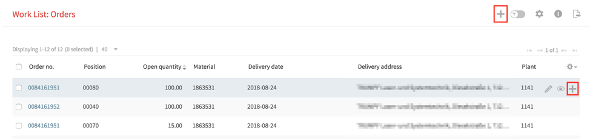
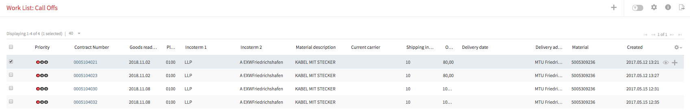
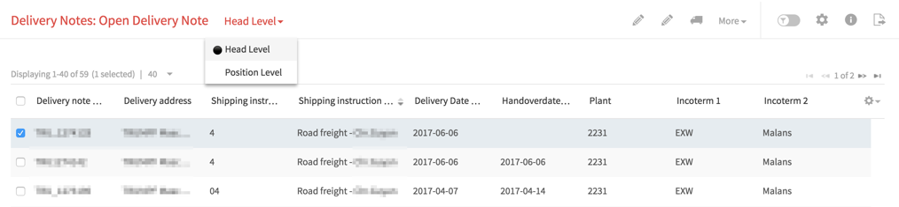
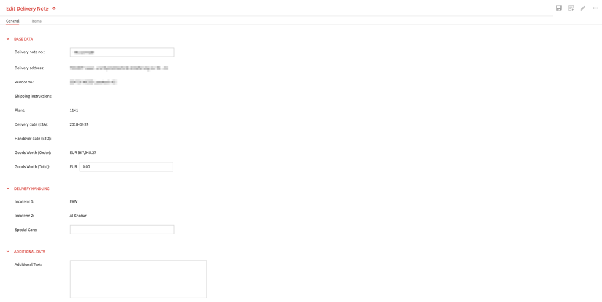
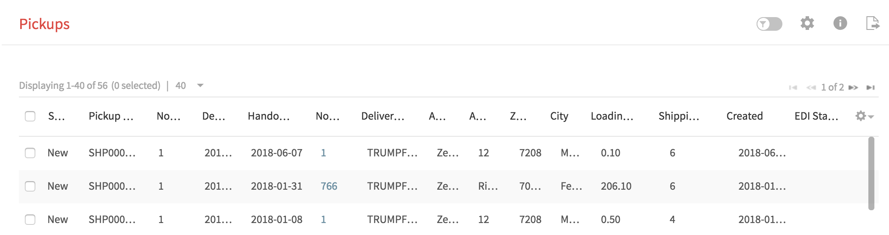
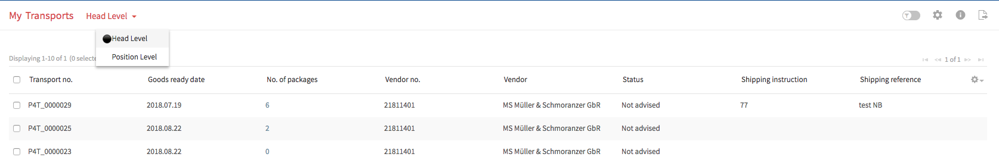
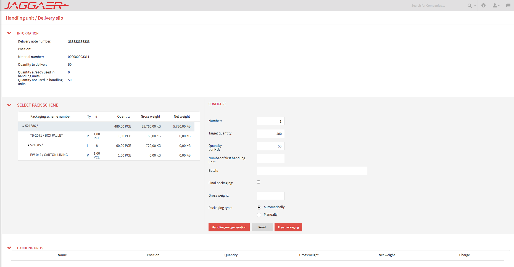
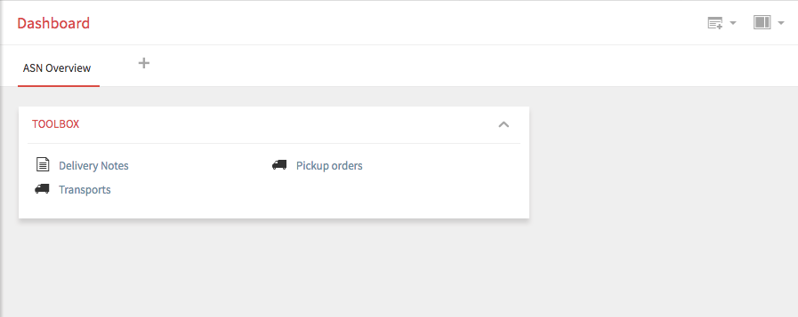

Advanced Shipping Notice (ASN)
Learn how the DESADV message enables automated goods receipt, real-time shipment tracking, and end-to-end delivery transparency.
What is an ASN?
An Advanced Shipping Notice (ASN) is a structured electronic message a supplier sends to the buyer before or when goods are shipped — containing exactly what is being shipped, when, in what packaging, and how it's being transported. In SAP/EDI terms the ASN is transmitted as a DESADV IDOC (Dispatch Advice).
Without an ASN, the receiving warehouse doesn't know what's coming until the truck arrives. With an ASN, the warehouse pre-plans unloading, assigns dock doors, creates inbound delivery documents in SAP, and can post goods receipt automatically when the shipment is confirmed via barcode scan.


ASN Hierarchy
An ASN is hierarchically structured — each level adds more detail about the physical shipment.
Level 1 — Shipment Header
- Supplier & buyer info
- Dispatch date
- Expected delivery date
- Waybill / CMR number
- Carrier
- Gross & net weight
Level 2 — Delivery / Order Reference
- PO number or SA reference
- Delivery note number
- Line items being shipped
Level 3 — Packaging (Handling Units)
- Pallet / box / carton details
- SSCC barcode per HU
- HU contents (item + qty)
- Batch numbers
Level 4 — Item Detail
- Material number
- Quantity shipped
- Batch / serial numbers
- Country of origin


Automated GR via ASN
This is JD's flagship ASN capability — eliminating all manual goods receipt entry.
Supplier creates ASN in JD portal
Enters shipment data, packaging hierarchy, and SSCC barcodes for each handling unit.
JD validates the ASN
Checks: qty matches PO/SA, SSCC format correct, delivery date within tolerance, all required fields populated.
DESADV IDOC sent to SAP
JD transmits the validated ASN to SAP, which creates an Inbound Delivery document automatically.
Warehouse pre-plans receiving
Staff see incoming shipment, assign dock door, pre-position resources — all before truck arrives.
Warehouse scans SSCC barcode
On arrival, scanner reads the SSCC. SAP matches it to the Inbound Delivery — zero manual entry.
GR posted automatically
SAP posts the goods receipt (MIGO) against the correct PO/SA line — no human input required.
RECADV back to supplier
JD sends a Receiving Advice to the supplier portal confirming what was received — closing the loop.



